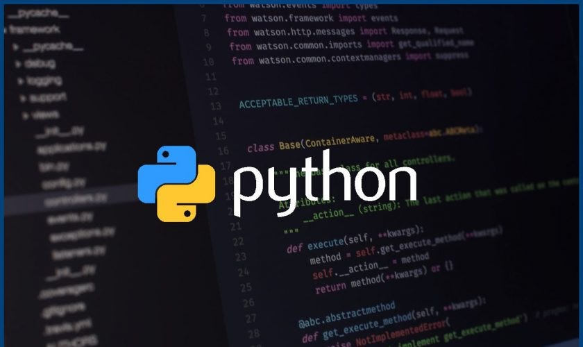

Python Introduction

* Python is a powerful and beginner-friendly programming language created by Guido van Rossum in 1989 and officially released in 1991.
* Guido developed Python during his free time over the holidays while working at a research institute in the Netherlands.
* The name "Python" doesn't come from the snake but from Guido's favorite comedy show, "Monty Python's Flying Circus".
* He wanted the language to be fun and easy to use, just like the show.
Python version :
* Python became popular because of its simple and readable syntax, which looks a lot like regular English.
* Over time, it has evolved through various versions. The first version, Python 1.0, was released with basic features like functions and exception handling.
* In 2000, Python 2.0 introduced advanced tools like list comprehensions and automatic memory cleanup.
* Later, in 2008, Python 3.0 made the language cleaner and more efficient, though it wasn’t backward-compatible with older versions.
* Today, Python is one of the most widely used programming languages in the world
Applications of Python:
* Python is incredibly versatile and is used in many fields.
* It is popular for web development, where frameworks like Django and Flask help build websites.
* In data science and machine learning, Python is the top choice, with powerful libraries like Pandas and TensorFlow.
* It is also used for automation, helping to write scripts that can save time by performing repetitive tasks automatically.
* Python is even used in game development, desktop applications, and IoT (Internet of Things), making it a tool that fits almost every need.
IDE Tools to use Python:
* IDE is Integrated Development Environment.
* It is a software application that provides tools like a code editor, debugger, and compiler/interpreter in one interface, making programming easier and more efficient.
Python IDE Tools:
* PyCharm
* Visual Studio Code (VS Code)
* Jupyter Notebook
* IDLE
* Thonny
* Spyder
* Atom
* Sublime Text
* Anaconda
* Wing IDE
Python Scripting
* Python scripting refers to writing Python code that automates tasks, processes data, or performs specific actions.
* Unlike full-fledged software development, scripting focuses on creating scripts—short programs meant to execute a series of instructions or automate a task efficiently.
Common Applications of Python Scripting
- System Administration:
Automating file operations, running system commands, or managing servers.
Example: Renaming multiple files in a folder.
- Data Processing:
Cleaning, transforming, and analyzing data.
Example: Reading CSV files, applying calculations, and saving results.
- Web Scraping:
Extracting data from websites.
Example: Scraping product prices from e-commerce sites.
- API Interaction:
Automating API calls for data retrieval or updates.
Example: Fetching weather data from an API.
- Testing and Debugging:
Writing test cases for software and debugging issues.
- Task Automation:
Scheduling and running periodic tasks.
Example: Sending automated email reminders.
- Machine Learning and AI:
Running training scripts for models.
Example: Automating data preprocessing and model evaluation.
Python Interactive Mode (REPL)
- R: Read – It reads the code or input you type.
- E: Evaluate – It evaluates the code or expression.
- P: Print – It displays the result of the evaluation.
- L: Loop – It goes back to accept more input in a loop.
use windows powershell: code to check python version
python --version
Learn more
Python Variables
Introduction to Python Data Types
Introduction to Python Operators
Introduction to Python Function
File handling
Dictionaries_(dict)_and_Dictionary-Methods
list_and_lists_operator
Iterators_and_Generators
Loops
Module and Imports in Python
Exception_Handling
List comprehensions
String String_Manipulation_and_Formatting
Tuples_and_Tuple_Operations.html